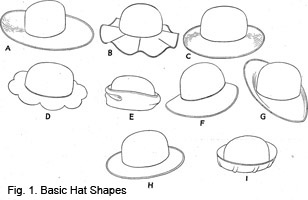
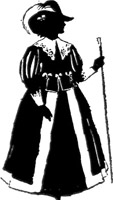

1928—The New-Way Course in Millinery and Hat Design
Lesson 4—Types of Shapes
The Eight Basic Types of Millinery Shapes
As a beginner of the fascinating art of millinery it is important that you know the different hat shapes. In this lesson I am going to tell you something about the various shapes and show you pictures of them. Of course you know that hats may be made in many different shapes, but every one can be traced back to these eight basic types. The frames may be made of wire, or buckram, or may be of braid molded over one of these kinds of frames. The shapes remain very much the same whether they are of silk, ribbon, straw or felt. For the present it is enough to learn to recognize these shapes. Later you will learn all about their particular requirements, about which styles are most becoming to various types of faces, etc.
Bowl Shaped Turban
Let us first study the bowl shaped turban, Fig. 1. This is a type of hat that is always fashionable, always being used as a base for other styles—most always becoming to every type of face. In millinery shops and department stores it is called "old reliable."
The bowl shaped turban is (see I) on the page of hat shapes. Notice the bowl shape of the brim—whence comes the name. The little ridges have been added merely to show how the plain bowl shape can be changed to appear like something entirely new. But remove these ridges—and you have the true bowl shaped turban.
The Flare Hat
The hat with a flare is in season and out. It is really very pretty when correctly made, and there are so many variations. It is not necessary to make the hat with the flare effect all the way around, but instead make a large flare on the side, or in fact, any place you desire. A double flare may be made, for this is also effective. The hat as pictured may be worn slightly tipped to one side or may be worn straight on the head with the flares shading the features. It is a graceful hat, and one that can be effectively trimmed in many novel and interesting ways. (See Fig. B.)
The Rolled Turban
Though it maintains meek indifference in the center of the page, the Rolled Turban (see E) is really one of the most popular shapes known to millinery. Countless adaptations are made from it—and each season sees it in some different form. The rolled turban shown here is the true type, rolling slightly higher at the center back. A great many rolled turbans have a brim that is even all around instead of being higher on one side.
Whether the rolled turban is covered with black velvet or gay chiffon depends upon whether the hat is intended for an elderly woman or a young girl—but most every type of material is suitable for covering this type of hat.
The Mushroom Shape
Who doesn't know the mushroom shape with its softly falling brim and its snug little crown? Becoming alike to young and old, it has long been one of the most popular and practical millinery shapes.
The mushroom brim droops (see C) as you will note, but the extent of the droop varies. It may be slight or deep according to what is more becoming. There are many ways of trimming the mushroom shape—but this is something that you will take up in a future lesson.
The Poke
The poke illustrated (see F) is an absolutely true type. It is often made larger or smaller, but the one shown here is the typical shape.
Be sure that you study the illustration carefully so that you will have no difficulty in distinguishing the poke shape from all others. Only by learning now the names of all millinery shapes can you hope to avoid confusion and difficulty in your later work in more advanced millinery.
Rose Petal Hat
You have probably seen this type of hat many times in millinery shops—but did you know its technical, distinguishing name? It is the rose petal hat, and the one illustrated here (see D) is the true type. The rim may be wider if preferred, and the petals may be as small or as large as one wishes.
Sometimes it is difficult to obtain the exact rose petal hat you wish. In this case it is a simple matter to buy a sailor shape (or make it yourself) and cut out the petals yourself. The making of this is taught later in the course.
The Sailor Shape
There is probably no other hat shape which is used in so many varieties of styles as the sailor shape. It is shown here with a round crown (see H) but it often has a square crown. Each season has its own favorite crown, but in the sailor hat the brim always remains the same—no matter what vain Fashion says to the contrary!
Do not confuse the sailor shape with the mushroom shape. The sailor brim is absolutely straight; the mushroom brim droops. They are two distinct shapes.
The Picture Hat
The last of the eight basic millinery shapes is the picture hat. We have illustrated two of these shapes for you—as there are many different kinds of picture hats. (See A and G).
If asked to define a picture hat, the expert milliner would say that it is a rather large hat that rolls up on one side and down on the other; or that it is straight on one side and rolls on the other. It has a tendency to be picturesque—and one associates it ordinarily with huge plumes, or massive flowers, or billows of tulle and lace.
Can You Point out the Eight Types of Millinery Shapes?
Unless you can, you are not ready to proceed with the next lesson. Before you can attempt to begin the construction of hats, you must be able to distinguish at once a mushroom shape from a sailor shape, a poke from a turban.
Review this lesson. Study the text and the illustrations. Then, keeping only the page of shape illustrations before you, see if you can name each one. Keep at it until you are convinced that you can identify any shape of hat as soon as you see it.